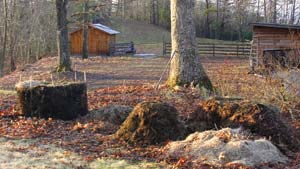
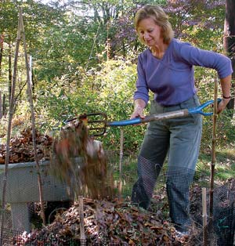
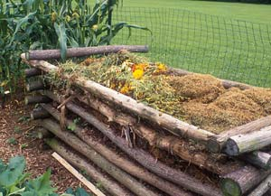
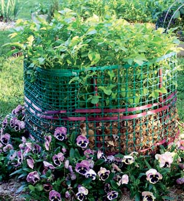
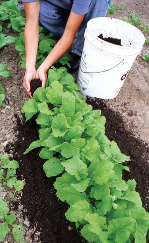
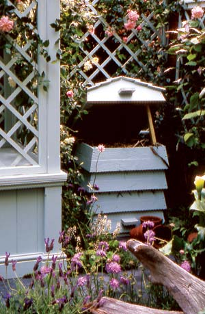

Many people start composting for practical reasons. Composting your leaves, grass clippings, garden waste and food scraps reduces the amount of garbage you generate. Plus, compost is essential for a great garden, and starting your own pile ensures a free, regular supply. But I think there’s an even better reason to compost: it’s fascinating. In fact, once you understand the basics of how the process works, composting can be one of the most interesting and enjoyable aspects of keeping a garden.
Composting mimics and intensifies nature’s recycling plan. A compost pile starts out as a diverse pile of kitchen and garden “waste.” Left alone, any of these materials would eventually decompose. But when a variety of materials are mixed together and kept moist and aerated, the process accelerates. Compost matures into what soil scientists call active organic matter: a dark, crumbly soil amendment that’s rich with beneficial fungi, bacteria and earthworms, as well as the enzymes and acids these life-forms release as they multiply.
Adding compost to garden soil increases its water-holding capacity, invigorates the soil food web and provides a buffet of plant nutrients. Compost also contains substances that enhance plants’ ability to respond to challenges from insects and diseases.
Starting a new compost pile can be a fast, easy project. (See “Start a Simple Compost Pile or Worm Bin.”) But new composters sometimes feel frustrated as they struggle to learn more about how the process works - an understandable problem since there is a wealth of information available about composting and not one, absolute “right way” to do it. As we take a close look at 10 basic truths of composting, it’s obvious that the world of composting is seldom black and white - or shall we say brown and green? At the same time, home composting is much easier than what you might have heard.
1. Balancing ingredients is optional. To help compost decompose rapidly, a balance of “two parts brown to one part green” is often preached as composting gospel, but in truth, keeping a balanced ratio is simply an option. (Dry materials, such as leaves, pine needles and dead plants, are usually considered “browns,” whereas wetter materials, such as grass clippings and kitchen waste, are considered “greens.”) It’s not that balancing browns and greens is wrong; it simply makes home composting more complicated than it needs to be. You can pile up all your organic material without worrying at all about greens and browns, and it will still mature into compost.
Precise balancing of materials is crucial in commercial composting operations, for example, the composting of city sewage, manure from animal feedlots or byproducts from food manufacturing plants. But the needs and objectives of a gardener are far different from those of a dog food manufacturer with a waste disposal problem. The goal of industrial composting is to neutralize the pollution potential of various materials. The goal of home composting is to support nature’s self-regenerating power in ways that work harmoniously with the needs and opportunities of a person’s back yard.
2. Good compost can be either hot or cold. Most people who carefully manage their compost piles for a balance of ingredients are trying to produce hot compost, which heats up or “cooks” as the materials decompose. Hot compost is the fastest type of compost to produce, but it’s not necessarily better than compost that rots slowly without heating up.
High temperatures in the compost heap are generated by bacteria as they work high-nitrogen materials, so hot compost that’s protected from leaching may be a superior source of this essential nutrient. But there’s a trade-off: Intensively worked hot compost that’s produced in only three to four weeks ranks pretty low in terms of microbial diversity.
If you want the best compost, you want cured compost. This is mature compost that is set aside in a covered place where it can age for at least a couple of months. Microorganisms continue to work as the compost cures, including a special group of bacteria that produce compounds thought to “prime” plants to do a superior job of defending themselves from pests and diseases.
I often use the last weeks of mild fall weather to finish off a really nice batch of compost, which I sift through half-inch mesh plastic hardware cloth and put into plastic bags or storage bins to cure. In spring, I have the perfect base for making potting soil for the next season’s plants.
3. Small or large - any size pile will work just fine. Compost manuals frequently promise that if you build a nicely balanced heap of well-moistened materials at least 3 feet high and wide, it will heat up and start cooking within days.
You can be absolutely sure that your compost will eventually rot, but super-sizing a heap offers little insurance that it will get off to a smoking start. You can save yourself a lot of trouble by simply piling stuff together until the heap is big enough to merit some attention. Then, one day, when you’re in a composting mood, pick up a digging fork and spend some time setting the heap to rights by mixing the materials in the pile and adding water to keep it moist.
4. Turning compost is optional. Many books warn that heaps will not get enough oxygen unless they are turned. This may be true of a heap that’s kept too wet, but most compost heaps aerate themselves as they shrink. Better reasons to turn compost include achieving a good mix of materials, discovering dry pockets in need of moisture, and satisfying your curiosity as to what’s happening in your heap. And, as the composting process advances and the materials become more fragile, turning and mixing breaks them into smaller pieces, which helps push almost-done compost to full maturity.
5. You can gauge the moisture level of your compost pile by its fragrance. When you dig around in a heap and don’t smell the desired earthy fragrance, lack of moisture is usually the reason. Dryness is a big challenge in the fall, when most gardeners make new compost piles from leaves. Shredding the leaves before composting them will help them break down faster, but they’ll need time and an amazing amount of water before they start breaking down.
To make it easier to keep these piles wet, I arrange a soaker hose in a figure 8 pattern, with about 4 inches of mower-shredded leaves and weathered hay between each layer of hose. I’ve found that hay vastly improves a leaf heap’s ability to retain water, and until the weather gets too cold to use it, there is no easier way to moisten the inside of a dry heap than by using a soaker hose.
Unpleasant odors in compost can be caused by the materials themselves (for example, broccoli stems or rotten oranges), but even smelly things won’t stink if they are buried a few inches deep. However, enclosed compost can go stinky if it’s too wet, which is easily fixed by adding dry material or simply letting it dry out. If you’re using a plastic bin or tumbler (see "Compost Tumblers"), do pay close attention to water, because it’s easy to add too much.
6. Compost need not be a secret. A compost bin or pile is only ugly if you make it that way, so there’s no need to hide compost in a remote corner. Carrying stuff across the yard to a hidden heap is a waste of time and energy. Locate compost as close as possible to where the materials are generated and/or where the finished compost will be used. Visually speaking, using a black or dark green enclosure will help a compost heap blend into a shady background. Or, you can use painted posts or fencing to make your setup a more colorful, great looking bin.
My yard includes four areas of working gardens, so I always have at least four heaps going - each within pitching distance from the garden beds. Those heaps will be turned three or four times, so I plan ahead for them to “walk” toward their final resting place with each turning. For example, a 5-foot diameter heap that starts out 15 feet from a garden plot will arrive at its destination after its fourth turning (the math allows for shrinkage). It’s a slow trip that starts in November and ends in June, but that’s how it is when you’re composting slow-rotting oak leaves.
7. You can compost diseased or weedy plants. Many experts recommend keeping seed-bearing weeds and diseased plants out of the compost heap so as not to reintroduce them into your garden. This makes sense, but what are you supposed to do with the stuff? I suggest giving these bad boys their own heap. Later on, after mildewed squash vines and seed-bearing crabgrass clippings have been given a few months to shrink to a more manageable size, you can cook the half-done compost to kill diseases and weed seeds.
For this job, I use a solar cooker made from a 20-inch cardboard box lined with aluminum foil. (You can find plans for simple solar cookers at the Solar Cooking Archive; be sure to search for “eye safety” and read the precautions for shielding your retinas from superintense light.) When I have compost from diseased and weedy plants, I take a 3-gallon heavy plastic pot filled with damp compost, enclose it in a clear plastic bag and place it in the cooker in direct sun. You can use an oven thermometer to find out how hot your cooker is. Two hours at 140 degrees kills most weed seeds and soilborne pathogens.
8. With a worm bin, you can even compost indoors. Composting with captive earthworms, called vermicomposting, is a great way to compost paper products and food waste from your kitchen. Vermicompost bins can be kept indoors or outside, but they work great indoors in winter, when outdoor heaps often freeze. Add vermicompost to planting holes, mix it into potting soil, or use it to top dress container-grown plants. Vermicomposting is great fun, and not at all messy. You’ll need to buy or build a special worm bin and fill it with bedding and food for the worms. Worm bins are also a great place to put any compost you’ve cooked in a solar cooker, because the worms and their entourage of springtails and mites quickly replenish the compost with fungi and bacteria. For more about how to get started, see “Start a Simple Compost Pile or Worm Bin.”
9. You can safely compost livestock manure. This biologically active material is a terrific soil amendment, and composting livestock manure makes it safe to use in the garden. You should use caution with animal manures because many do contain diarrhea-inducing E. coli bacteria, but making and using manure-enriched compost won’t make you sick unless you’re careless or impatient.
The E. coli present in most types of animal manure is slowly eliminated by more competitive microorganisms as compost matures. Using fresh, uncomposted manure near growing food plants is risky, as is consuming unwashed vegetables that grow within mud-splashing range of recently manured soil. But if you allow the compost to mature before applying it to your garden and always wash your produce before you eat it, you need not worry about this problem.
Many folks think that “teas” brewed from compost do good things when sprayed on plants, but nature’s version of compost tea - rainwater filtered through composting mulch - is much simpler and safer. Any tiny traces of E. coli are quarantined in the soil, where they meet their destiny with death. In contrast, brewing manure-based compost and spraying it on your food just doesn’t seem like a good idea.
10. There are good uses for immature compost. Beyond composting in aboveground heaps and containers, you can make compost in excavated holes or pile up stuff in layered beds, and then plant right into the compost-in-progress. Peas, beans, potatoes and squash are especially well suited to growing in compost-filled trenches. In my garden, I use edible legumes as the first plants in new garden space, which may or may not get dug up before I layer up half-done compost with soil and whatever else I can find - grass clippings, weathered sawdust or horse manure from a friend’s barn. Some people call this lasagna compost. If you top off the layers with burlap or some other water-permeable cloth, you can call it Interbay compost, named after the innovative gardeners at Interbay Community Garden in Seattle, who reuse burlap coffee bags to cover layered compost. I call it comforter compost because it’s such a good way to tuck in soil for winter, or begin the healing process for soil that’s been neglected or abused.
As for squash and potatoes, they have taught me that they are perfectly happy growing in compost, so I keep them in mind as I create new heaps in the fall. In my tight mountain clay, these crops do especially well in “dugout” beds that are filled with layers of soil and raw compostables. Even if the compost is not completely rotted by spring, potatoes and squash can’t tell the difference.
Every gardener wants to make great compost, and experience is the best teacher. Just know this - you cannot fail, because compost knows what to do. As eloquently noted by longtime Mother reader Wayne Morris of Bloomingdale, N.Y, “The beauty of compost is that it only needs to be as much of an art or science as we wish it to be. It’s like walking. You can train for a marathon or you can simply put one foot in front of the other, and eventually you will get where you need to be.” Trust the composting process, follow nature’s lead, and things will grow up great in the end.
Compost helps plants grow better by improving the soil’s structure and water-holding capacity, and by increasing the supply of nutrients the soil provides for your plants. Regular applications of compost also help prevent plant diseases by making your plants healthier.
Start a Compost Pile
1. Set a commercial or homemade composter on the ground in an easily accessible place. For a simple and inexpensive open bin, make a circle about 3 or 4 feet in diameter out of 3-to-4-foot-high welded wire or plastic garden fencing.
2. Add ingredients. Place a 4 inch layer of stemmy plants, sticks, or other coarse material in the bottom of the bin. As they become available, add kitchen wastes, dead plants, grass clippings and chopped leaves to the bin. Add water as often as needed to keep the material moist but not soggy (like a wrung-out sponge).
3. Turning the pile is helpful but optional. If you choose to turn, lift off the composter or bin and set it next to the pile. Then use a pitchfork to move the pile back into the composter.
4. The compost is ready to use when you can no longer recognize the original ingredients. Until you use it in your garden, keep your finished compost covered to prevent rain from leaching out nutrients.
Good Compost Ingredients:
Leaves, hay and other dead plant material
Fruit and vegetable trimmings
Herbicide-free grass clippings
Manure from horses, cattle, goats, poultry and rabbits
Paper or cardboard, torn into strips or hand-sized pieces
Do NOT Add:
Meat scraps
Very fatty, sugary or salty foods
Chips or sawdust from treated wood
Clippings from herbicide-treated lawns
Manure from omnivorous animals (dogs, cats, humans, etc.)
Compost Troubleshooting
Many people with limited yard space do their composting indoors by starting a worm bin. Worms kept in a vermicompost bin are the quietest, least demanding pets you will ever keep. Aspiring vermicomposters are instructed to purchase a starter herd of red wigglers (Eisenia fetida), a species well suited to the mission and conditions in contained bins. But unless you live in a place with few or no earthworms you can simply practice “catch-and-release” vermicomposting. In fall, gently dig into the outdoor bin or composter where you’ve been putting vegetable and fruit scraps, and you will likely find a generous supply of red worms or a similar species that has a natural appetite for compostable tidbits. Catch a few dozen worms and release them to an indoor bin, and you’re in business.
Easy Vermicomposting
1. You can buy a specially designed bin for worm composting, or make your own by drilling about 30 holes around all sides of a 10- to 15-gallon plastic storage bin to let in oxygen for the worms.
2. Fill the bin half full with damp newspaper and/or unwaxed cardboard, torn into small pieces. Add 1 pint gritty soil (worms have gizzards, like chickens, to help them “chew” their food), 1 pint compost, and 1 cup plain cornmeal. Mix and dampen well.
3. Add worms and secure the lid. Keep in a cool place, such as a basement, where temperatures range between 55 and 75 degrees.
4. When adding food scraps, bury them in different parts of the bin. Cover them with 1 inch of bedding.
5. To harvest vermicompost, scoop out several handfuls of material from the bottom of the bin. Place the material in a cone-shaped pile in a bucket, and put it in a brightly lit place. After two hours, the worms will have moved to the bottom, and you can pick up the top two-thirds of the material. Return the worms to the bin, or release them to an outdoor compost pile.
Good Additions to Your Vermicompost Bin:
Fruit and vegetable trimmings, cut into small pieces
Grains (breads, cereals, rice)
Green grass clippings in small amounts
Coffee grounds with paper filters
Whole tea bags
Waste paper, torn into small pieces and moistened
Undesirable Additions:
Slow-rotting foods such as citrus peels
Spicy peppers or pungent onions
Meat scraps
Oily or greasy foods
Very sugary or salty foods
Vermicompost Troubleshooting
Worms Eat My Garbage
by Mary Appelhof
Diary of a Compost Hotline Operator: Edible Essays on City Farming
by Spring Gillard
|
 BARBARA PLEASANT Composting is a great use for fall leaves. |
 BARBARA PLEASANT Author Barbara Pleasant makes a new compost pile. |
 JUDY WHITE/GARDENPHOTOS.COM Compost helps plants grow better by improving the soil’s structure and water-holding capacity, and by increasing the supply of nutrients the soil provides for your plants. |
|
 BARBARA PLEASANT A gardening shortcut: Potatoes will grow directly in a compost pile (and pansies like it, too). |
 DAVID CAVAGNARO Compost can be mixed into your garden soil, or used as a side dressing for plants, as shown here. |
 JUDY WHITE/GARDENPHOTOS.COM Compost bins come in many designs, from simple and inexpensive plastic mesh to decorative and durable containers. |